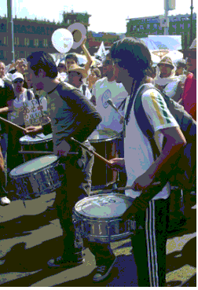

- Todo fue inútil – Dijo uno
- ¿Inútil? – intervino caliente el Colo - ¡Ni lo pienses, jamás es inútil!...
Autor: Enrique Pérez Basile (Argentina) |
Adiós
A veces me detengo por la calle sin saber para qué o por qué. Es una orden interior que obedezco sin preguntas ni sorpresas.
Es algo así como esperado, como mío, una suerte
de enajenación, algo de cuya identidad y procedencia no reniego ni desconozco. Y sin embargo, no sé por qué lo hago ni quien me obliga.
Entonces como si recobrara por un segundo la lucidez, experimento la sensación de bochorno conocida.
Una suerte de desazón y vergüenza, producto de aquello que no sé qué es, que busco y que no encuentro, pero que reconocería
al instante si lo viera, y el regreso fugaz al estado consciente, me reintegra mi propia imagen, inmovilizada, pusilánime,
dolorosa y expuesta, vergonzosamente expuesta a todos ellos, a los demás. Lo curioso no comienza sino un segundo después,
cuando mi primera impresión se hace clara, como quien dice, cuando advierto que estoy detenido buscando con la vista a mí alrededor.
Buscando, sí; buscando algo que no está, que nunca está. Y, concluyo sabiendo que no está ni debería estar, porque no se trata de un
afuera, sino de algo que tengo adentro, y que ya empiezo a oír, es decir a sentir, siento, en todo caso, el sonido de mi propia descomposición,
un modo indefinible de convertirme de pasar de estado, y ahí empiezo a tranquilizarme, sin poder discernir cómo ni por qué.
Y enseguida se viene la justificación, porque ese cambio operado en mí da paso, posibilita el profundo saber, la explicación total, y entonces
todo asume claridad y paz. Ahora la parálisis que me deja tieso contra la pared se justifica sola y comienzo a escucharla otra vez, otra vez pero nueva.
Puedo oírla nuevamente, ya llegan los sonidos de esa música caótica pero mía. Esas notas, que no lo son, y que arrancan siempre igual,
pero que continúa diferente en todos los casos; que jamás se repiten y por eso, para saber qué forma y ritmo tomará cada día, es que espero con
precaución, con miedo, porque sé que reconoceré, cuando lo oiga, el sonido de mi adiós. No se trata de ritmos populares ni clásicos, ni orientales
ni medievales ni dodecafónicos los que suenan en mi interior, no tienen forma ni estructura conocida, y es que se hay composiciones específicas
para cada individuo elegido, y de entre ellas una que me corresponde, que han compuesto para mí, para mi identificación unívoca.
Alguien o algo se ocupa de eso, estoy seguro, para definirme como otro ser o como otra cosa, quién sabe qué, tal vez para convertirme en sonido en algún momento,
o tal vez, no lo sé todavía, digo, tiemblo al pensarlo, que ya lo sea y no me dé cuenta, que en una de esas, ya me hayan mutado en esencia…
Y es por eso que me inmoviliza, que me aterra al empezar a escucharla porque en cualquier momento, yo lo sé, voy a desaparecer desvanecido en ondas,
en apenas un diapasón mudo en el aire, una nada, un nadie que en lo etéreo tendrá su ser, su esencia y su sino, porque…
¿Qué otra cosa puede tener una música aunque sea tan de allá, como ésta? ¿Acaso significado?
Como sea, la pared me abriga todavía; me liga a lo material; me mantiene en el mundo y aunque la gente me mira sin saber,
por más que nunca jamás alguien me preguntó si necesitaba algo, si me sentía bien en ese trance. Yo nunca dejé de verlos a ellos,
con un agregado sorprendente: mientras escucho esa música, entiendo el dolor y la resignación de los que pasan a mi lado.
Si pudiera concentrarme, pareciera que hasta podría decir cómo se llama cada uno, donde vive…
Pero lo que sí puedo distinguir,
con diáfana claridad, aún sin proponérmelo, es si el que pasa en ese momento está pensando en terminar con su vida, si esa persona es un suicida a término, y
es muy fácil identificarlo porque se me oprime el corazón antes de que llegue, antes de verlo y luego, al pasar a mi lado, adquiere un color rojo subido,
feo de mirar y seguro, peor de sentir, y adivino que la vida no lo entiende ni lo quiere, que vaga sin pausa perdido en ella, porque, pobre alma atormentada, nació en un lugar
y en un momento equivocados.
La música sigue sonando y sería inútil tratar de no oírla porque me doy cuenta que su sonido me identifica, soy yo mismo en esa música que me envuelve,
me transforma, dejándome aislado de los demás a tal punto que en este momento parecen no verme. Todo está preparado para que en un
futuro que adivino muy cercano, yo desaparezca, no, bueno, desaparecer casi no sería, que me envanezca, si tal vez fuera eso, hacia otra versión de vida,
de existencia intangible Un día de estos convertido en música ininteligible iré a anidar, quizás, en un arpa inversa o en un piano cuyas notas
deberán levantarse en lugar de bajarlas para así lograr los anti sonidos, los reversos audibles que fueran capaces de interpretar lo que oigo.
Si me quedara algo de suerte, si me dieran todavía un tiempo aunque no sea grande, porque, como ya dije, esto no se parece a nada que haya sonado
antes, ni se asemeja a lo que hemos llamado música hasta ahora, si fuera que esta rareza sin nombre estuviera naciendo ahora y tuviera que crecer y definirse,
en busca de una identificación personal más perfecta, eso me daría un margen. En rigor no lo creo, algo me dice que lo mío ya está terminado…
Lo presiento así, no me queda lugar para dudar, pero es que estos sonidos no se han creado todavía entre nosotros. Ninguna mente imaginativa y feraz,
ha podido concebir nada parecido. y eso es lo que me alienta a pensar que me queda un tiempo acá entre la gente, para volver al café, encontrarme con los amigos,
a los que no les conté nada ¿Para qué? Me tratarían de loco y seguro que me querrían más por eso, pero… ¿Cómo les respondería yo, cómo se hace para
ser un loco todo el tiempo sin serlo?
¡Si yo pudiera elegir! Si pudiera elegir yo quisiera convertirme en un tango errante con colores de lagos de luna y bosques de ilusiones frutadas,
o en una sinfonía corta y ciudadana, en la que se escuche el taconear de una mina por las veredas altas donde su caminar fuera de pasos alados,
con tersas alas rosadas, para ir de pico en pico, de cerro en cerro, por la portentosa cordillera. Pero eso es lo que conocemos, es lo de acá, es la canción
primera, es toda la dulce música que me acompañó siempre, aunque suene raro, y lo que yo escucho en mi interior no es etéreo acompañamiento,
sino ruidos que parecieran poder tocarse, sólidos, de punzante transcurrir y sin final. Lo que quiera que sea no tiene nuestra matriz ni aquel dulce y
reconocido misterio con el que bailé y enamoré alguna vez, ni su entrañable forma. Lo que oigo sucede, se afirma en lo extraño, no tiene nada de nosotros,
pertenece a otros, y seguramente no es de este mundo, y mi desvelo temeroso, este desasosiego que me consume, es precisamente porque temo que algo
se producirá de un momento a otro, y me trasladarán a ese ignorado lugar, donde esta música seguramente tiene sentido y aceptación. Sé que algo mínimo
le falta a esta partitura de no ritmo, y por eso estoy aquí todavía, algo que quizás en instantes conseguirán y me abarcará entero, pasaré a ser anti música
como parece estar ordenado y tendré que decir adiós a esta vida. ¿Por qué a mí?
Pero, bueno, si tiene que ser así, yo podría… Digo, sería lindo irme hecho música… ¿Por qué no? Pero música que entienda, que me emocione, que nazca
de las siete notas conocidas y no de esta fuerza indescriptible y extraña, rota de toda entereza, perdida de toda nobleza, que marca extravíos de ritmos siderales,
ecos del averno transformados en compases disociados y acordes del insondable abismo, sin notas audibles, sin sentido ni sentimiento reconocible, sin una pizca
de belleza y caracterizada de anti dulzura.
Algo está sucediendo, ocurre un estruendo que veo pero no oigo, me siento conducido por nadie, solo, absolutamente solo…
Ya está, es el fin, la completaron…
¡Me llevan!... ¡Me estoy borrando!…
Quisiera volver en… Adiós…
Anterior
Cadito: ¡Ni lo pienses, jamás es inútil!
Cadito, sonrisa y tambor, paseaba entre la gente que no se acababa nunca. Miraba a los costados, atrás y adelante y una jungla de piernas lo acompañaba.
Una jungla cadenciosa, pero no alegre. Había en la mirada de la gente una convicción junto a un leve temor. Pero la bronca los llevaba.
La miseria del desempleo los empujaba a esa marcha y caminaban. Iban al encuentro de los que mandan para hacerles oír su voz.
Con ellos también iba la muerte. Lo sabían.
- Al menos nos escucharán, se decían, sabrán por qué estamos aquí… Si no te ven en la calle se hacen los boludos y andan diciendo por ahí que está todo bien.
Cadito se apartó de Hernán. Hablaba su rabia. Si el sabía que el tambor no sonaba más.
Estaban llegando a la esquina. En eso le pareció ver una corrida muy adelante.
 |
Doblemos por esta calle y le salimos por atrás… ¡Vamos! ¡Vamos! Y dirigiéndose a un pelirrojo que estaba a su lado, le pidió:
- Colo andá a avisarle al Negro lo que vamos a hacer. Que estén preparados, junten piedras.
De pronto se formó una gruesa columna que seguían al grandote.
Doblaron en el sentido del tránsito, volvieron a doblar y al encarar la última calle los estaban esperando.
Los carros hidrantes se les vinieron encima. Atrás venían los de la Guardia de Infantería. Serían veinte o veinticino.
Empezaron a repicar las balas de goma por todos lados.
Sacaron las piedras de los bolsos y empezaron a contestar el ataque. Se oyeron detonaciones diferentes.
Vieron a la columna del Negro que aparecía por el otro extremo de la calle.
La policía había quedado entre dos frentes y se pusieron locos.
Ahora sí sonaba el tambor. Cadito reía y golpeaba el parche con alegre furia… En un momento quedó sólo.
El les disparaba a repetición con su tambor.
Cadito cayó. Una bala le había dado en el muslo derecho. Lo molieron a bastonazos en el suelo. Se cubría con su tambor que quedó destrozado.
Las piedras ahora caían como lluvia. Los policías se replegaron dejando libres unos metros y un compañero se vino y cargó con Cadito llevándoselo para atrás.
Cadito se desangraba, la bala le había dado muy arriba y no se podía hacer torniquete.
Sí, pero están muy mal… No sé…
Cadito seguía sangrando. ¿Dónde está mi tambor? Preguntó y perdió el conocimiento.
Cadito seis compañeros para darle sangre. Le sacaron la bala y le hicieron una transfusión de inmediato.
Tenía la clavícula derecha quebrada y una costilla. Le enyesaron el torso hasta arriba.
- De los tres últimos que trajeron, el pibe se repondrá. De los otros dos uno está en Intensiva con pronóstico reservado. El otro llegó muerto.
Les informaron luego en la guardia.
Las columnas se retiraron, dejando su sangre, su valeroso testimonio y catorce compañeros presos.